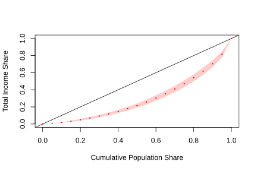

3.1 Estimation of distribution and inequality parameters
3.1.1 Dispersion estimation
In household surveys it is also essential to estimate measures of dispersion of the variables studied, since these allow us to evaluate the degree of heterogeneity existing in the population. For example, knowing how dispersed household incomes are is key to analyzing economic inequalities and guiding the design of public policies. Among the most used measures of dispersion is the standard deviation, which quantifies how far the observed values are from their mean. The estimator of this parameter is presented below:
\[
\hat s_y = \sqrt{\frac{\sum_{h}\sum_{i}\sum_{k} w_{hik} \ \left(y_{hik}-\hat{\bar{y}}\right)^{2}}{\sum_{h}\sum_{i}\sum_{k} w_{hik}-1}}
\]
To estimate the standard deviation of numerical variables in household surveys using R, the function survey_var can be used. Below is an example of its use applied to the estimation of the standard deviation of income, the results of which are shown in Table 3.14.
survey_design %>%
group_by(Zone) %>%
summarise(
Var = survey_var(
Income,
level = 0.95,
vartype = c("se", "ci"),
na.rm = TRUE
)
) %>%
mutate(
Sd = sqrt(Var),
Sd_low = sqrt(Var_low),
Sd_upp = sqrt(Var_upp)
)| Zone | Var | Var_se | Var_low | Var_upp | Sd | Sd_low | Sd_upp |
|---|---|---|---|---|---|---|---|
| Rural | 96274 | 13794 | 68960 | 123588 | 310 | 263 | 352 |
| Urban | 338628 | 81241 | 177763 | 499494 | 582 | 422 | 707 |
As observed in the previous example, the standard deviation of income by area was estimated, also reporting its corresponding 95% confidence interval. The arguments of the survey_var() function are equivalent to those previously used for the estimation of means and totals. If the interest is to estimate the standard deviation of income simultaneously disaggregating by sex and area, the corresponding computational codes are presented in Table 3.15.
survey_design %>%
group_by(Zone, Sex) %>%
summarise(
Var = survey_var(
Income,
level = 0.95,
vartype = c("se", "ci"),
na.rm = TRUE
)
) %>%
mutate(
Sd = sqrt(Var),
Sd_low = sqrt(Var_low),
Sd_upp = sqrt(Var_upp)
)| Zone | Sex | Var | Var_se | Var_low | Var_upp | Sd | Sd_low | Sd_upp |
|---|---|---|---|---|---|---|---|---|
| Rural | Female | 86947 | 12459 | 62277 | 111618 | 295 | 250 | 334 |
| Rural | Male | 106119 | 15616 | 75197 | 137040 | 326 | 274 | 370 |
| Urban | Female | 323069 | 82058 | 160585 | 485553 | 568 | 401 | 697 |
| Urban | Male | 356141 | 83488 | 190826 | 521456 | 597 | 437 | 722 |
3.1.2 Percentile estimation
Non-central position measures, such as percentiles and medians, allow us to identify specific points in the distribution of a variable of interest other than its average value. In household surveys, this type of measure is especially useful to characterize the distribution of economic and social variables, such as income, expenditure or hours worked. The median, for example, corresponds to the value that divides the population into two equal parts: 50% of the observations are below said value and the other 50% above it. Unlike the mean, the median is not very sensitive to extreme values, which is why it is usually considered a robust measure of central tendency.
Similarly, percentiles allow you to identify specific segments of the population distribution. For example, income percentiles can be used to identify the population in the top 10% of the distribution for tax purposes, or to target subsidies to households in the lowest percentiles. According to Loomis et al. (2005), the estimation of quantiles in complex surveys is based on the use of weighted estimators and the estimation of the cumulative distribution function (CDF) of the population. For a finite population of size \(N\), an estimator of this distribution is given by: \[ \hat{F}\left(x\right) = \frac{\sum_{h} \sum_{i} \sum_{k} w_{hik} \ I\left(y_{k}\leq x\right)}{\sum_{h}\sum_{i}\sum_{k} w_{hik}} \]
where the function \(I\left(y_{k}\leq x\right)\) is an indicator variable that takes the value one if \(y_i \leq x\) and zero otherwise.
Once the CDF is estimated using the sample design weights, the \(q\)-th quantile of a variable \(y\) is defined as the smallest value of \(y\) for which the CDF is greater than or equal to \(q\). In particular, the median corresponds to the value for which the CDF reaches or exceeds 0.5; therefore, the estimated median is the value where the estimated CDF is greater than or equal to 0.5. In this way, following the recommendations of Heeringa et al. (2017) for estimating quantiles in complex surveys, the observations are ordered in ascending order (order statistics) so that \(y_{(1)} \geq y_{(2)} \geq \ldots \geq y_{(n)}\) and the value of \(j\) \((j=1,\ldots,n)\) is identified such that: \[ \hat{F}\left(y_{(j)}\right)\leq q\leq\hat{F}\left(y_{(j+1)}\right) \]
Under this condition, the estimator of the \(q\)-th quantile is obtained through linear interpolation, which allows obtaining more stable and precise estimates of the quantiles, especially when the CDF presents important jumps associated with the use of sampling weights. Regarding the estimation of the variance of percentiles and medians, as well as the construction of confidence intervals, Kovar et al. (1988) carried out a simulation study in the context of complex designs and recommend the use of replication methods due to their good performance for this type of non-linear parameters.
Both the quantile estimators and the methods to estimate their variances are implemented in R. In particular, the survey_median() function allows us to obtain the median along with its standard error and confidence interval. The syntax for estimating median household expenditure using the example database is presented below, the results of which are shown in Table 3.16.
survey_design %>%
summarise(median = survey_median(Expenditure,
level = 0.95,
vartype = c("se", "ci")
)
)| median | median_se | median_low | median_upp |
|---|---|---|---|
| 298 | 8.82 | 282 | 317 |
As can be seen, the arguments of the survey_median() function are equivalent to those previously used to estimate totals and means. As with other population parameters, the median can also be estimated for different study domains, such as geographic area, sex or age groups. Table 3.17 shows the results by geographic area.
survey_design %>%
group_by(Zone) %>%
summarise(median = survey_median(Expenditure,
level = 0.95,
vartype = c("se", "ci")
)
)| Zone | median | median_se | median_low | median_upp |
|---|---|---|---|---|
| Rural | 241 | 11.0 | 214 | 258 |
| Urban | 381 | 19.8 | 337 | 416 |
If the goal is to estimate a specific percentile other than the median, for example the 25th percentile (first quartile), the survey_quantile() function can be used as follows. The corresponding results are presented in Table 3.18.
survey_design %>%
summarise(quantile = survey_quantile(Expenditure,
quantiles = 0.25,
level = 0.95,
vartype = c("se", "ci"),
interval_type = "score"
)
)| quantile_q25 | quantile_q25_se | quantile_q25_low | quantile_q25_upp |
|---|---|---|---|
| 200 | 13.8 | 163 | 218 |
Note that the interval_type = "score" argument was added, which indicates that the confidence intervals are constructed using the score method based on the percentile influence function. This approach is recommended by Lumley (2010) for the analysis of data from complex sampling designs. Similarly, the estimate of the 25th percentile can be obtained for different subgroups of the population, such as gender or geographic area, using group_by(), as shown in Table 3.19.
survey_design %>%
group_by(Zone, Sex) %>%
summarise(quantile = survey_quantile(Expenditure,
quantiles = 0.25,
level = 0.95,
vartype = c("se", "ci"),
interval_type = "score"
)
)| Zone | Sex | quantile_q25 | quantile_q25_se | quantile_q25_low | quantile_q25_upp |
|---|---|---|---|---|---|
| Rural | Female | 160 | 7.18 | 135 | 163 |
| Rural | Male | 163 | 3.45 | 150 | 163 |
| Urban | Female | 258 | 10.40 | 249 | 291 |
| Urban | Male | 259 | 10.03 | 257 | 297 |
3.1.3 Estimation of the Gini coefficient
The issue of economic inequality transcends the strictly statistical field and constitutes one of the central themes of contemporary social analysis. There is a broad consensus regarding the importance of understanding how economic inequalities condition people’s opportunities, well-being and quality of life. In this sense, the rigorous measurement of inequality represents a fundamental input for the design, monitoring and evaluation of public policies aimed at social equity.
Among the most widely used indicators to quantify economic inequality is the Gini coefficient (\(G\)), which measures the degree of income concentration by comparing the observed distribution with a hypothetical situation of perfect equality. This coefficient takes values between 0 and 1, where \(G = 0\) represents perfect equality and \(G = 1\) corresponds to the maximum possible level of inequality. Higher values indicate a greater concentration of income in a small group of the population.
In the context of household surveys, the estimation of the Gini coefficient must adequately incorporate the characteristics of the sample design, including expansion factors, stratification and conglomeration. In many cases, the sample weights are previously normalized in order to simplify the estimation procedures and facilitate computational processing. According to Binder & Kovacevic (1995), the Gini coefficient estimator can be expressed as: \[ \hat{G} = \frac{2\sum_{h}\sum_{i}\sum_{k}w_{hik}^{*} \ \hat{F}_{hik} \ y_{hik}-1}{\hat{\bar{y}}} \]
where \(w_{hik}^{*}=\dfrac{w_{hik}}{\sum_{h}\sum_{i}\sum_{k}w_{hik}}\) corresponds to the normalized sample weight, \(\hat{F}_{hik}\) represents the estimated cumulative distribution function (CDF) for observation \(k\) within the cluster \(i\) of the \(h\) stratum, and \(\hat{\bar{y}}\) denotes the weighted average of the income variable in the population.
Authors such as Osier (2009) and Langel & Tillé (2013) delve into additional technical aspects, especially as related to the estimation of the variance of the Gini coefficient under complex designs. The convey (Jacob et al., 2024) package implements the recommended procedures for calculating the Gini coefficient and its variance in household surveys. First, the sample design is prepared using convey_prep(). The svygini() function then calculates the Gini index using the input variable and the specified complex survey design. Below is the syntax to estimate it in the example database, presented in Table 3.20:
library(convey)
gini_design <- convey_prep(survey_design)
gini <- svygini(~Income, design = gini_design)
data.frame(Gini = coef(gini),
standard_error = SE(gini),
ci_lower = confint(gini)[1],
ci_upper = confint(gini)[2])| Gini | Income | ci_lower | ci_upper | |
|---|---|---|---|---|
| Income | 0.413 | 0.019 | 0.377 | 0.45 |
If the interest focuses on the estimation of the Lorenz curve, it is important to remember that, according to Kovacevic & Binder (1997), this represents the relationship between the accumulated percentage of the population (ordered from households with the lowest income to those with the highest income) and the accumulated proportion of the total income concentrated in said population. The 45-degree diagonal line corresponds to a hypothetical situation of perfect equality, in which all individuals share proportionally in the total income.
The area between the Lorenz curve and the diagonal of equality is known as the Lorenz area, and the Gini coefficient can be interpreted as twice this relative area. Consequently, the closer the Lorenz curve is to the diagonal, the greater the level of equity in the distribution of income; On the contrary, further curves reflect higher levels of economic inequality.
To create the Lorenz curve in R, the function svylorenz() is used, presented in Figure 3.1:
clorenz <- svylorenz(
formula = ~Income,
design = gini_design,
quantiles = seq(0, 1, .05),
alpha = .01
)
Figure 3.1: Estimated Lorenz curve for household income
The formula = ~Income argument specifies the income variable on which the cumulative distribution will be calculated. The argument design = gini_design indicates the previously defined sample design object, which contains the information related to weights, strata and clusters of the survey. For its part, quantiles = seq(0, 1,.05) defines the distribution points at which the Lorenz curve will be evaluated, generating percentiles from 0 to 1 in increments of 0.05. Finally, the alpha =.01 argument establishes a significance level of 1%, which is equivalent to constructing 99% confidence intervals for the estimates associated with the curve.
### Correlation estimation {#estimacion-de-la-correlacion}
In the study of household surveys, in addition to describing variables individually, it is essential to analyze how they relate to each other. One of the most used tools for this purpose is the Pearson correlation coefficient, which measures the strength and direction of the linear relationship between two numerical variables. This coefficient takes values between -1 and 1. A positive value indicates that both variables tend to increase simultaneously, while a negative value indicates that when one variable increases, the other tends to decrease. For their part, values close to zero suggest the absence of a strong linear relationship between the analyzed variables.
For example, in a household survey it may be of interest to study whether there is an association between household income and their level of expenditure, as well as evaluate the magnitude of said relationship. This type of analysis allows us to better understand the economic and social patterns observed in the population.
In complex surveys, it is necessary to incorporate sampling weights so that the estimate is representative of the population. This adjustment takes into account stratification, clustering, and unequal selection probabilities. The weighted calculation involves evaluating the covariance between the two variables and dividing it by the product of their weighted standard deviations, thus eliminating the influence of the measurement units. Assuming that \(\hat{\bar{x}}\) is an estimate of the population mean of the \(x\) variable, then the weight-adjusted Pearson correlation coefficient is expressed as: \[ \hat{\rho}_{xy} = \frac{\displaystyle \sum_{h} \sum_{i} \sum_{k} w_{hik} (y_{hik} - \hat{\bar{y}})(x_{hik} - \hat{\bar{x}})} {\sqrt{\displaystyle \sum_{h} \sum_{i} \sum_{k} w_{hik} (y_{hik} - \hat{\bar{y}})^2} \sqrt{\displaystyle \sum_{h} \sum_{i} \sum_{k} w_{hik} (x_{hik} - \hat{\bar{x}})^2}} \]
The survey package has the svyvar() function that allows obtaining weighted covariance matrices, from which the correlation can be calculated. Table 3.21 presents an example of estimation for the variance covariance matrix between household income and expenditure.
| Variable | Income | Expenditure | |
|---|---|---|---|
| Income | Income | 243719 | 98337 |
| Expenditure | Expenditure | 98337 | 77887 |
The svyvar function estimates the variance and covariance matrix considering the sample design. From this matrix the correlation can be obtained by applying the following instructions:
cov_xy <- cov_matrix[1, 2]
sd_x <- sqrt(cov_matrix[1, 1])
sd_y <- sqrt(cov_matrix[2, 2])
weighted_cor <- cov_xy / (sd_x * sd_y)
weighted_cor## [1] 0.714If you also want to perform statistical inference on the correlation, for example obtaining standard errors or confidence intervals, you can use replication methods (bootstrap/jackknife) compatible with the survey package. Another option is to use the svycor function from the jtools package to directly estimate the correlation:
## Income Expenditure
## Income 1.00 0.71
## Expenditure 0.71 1.00